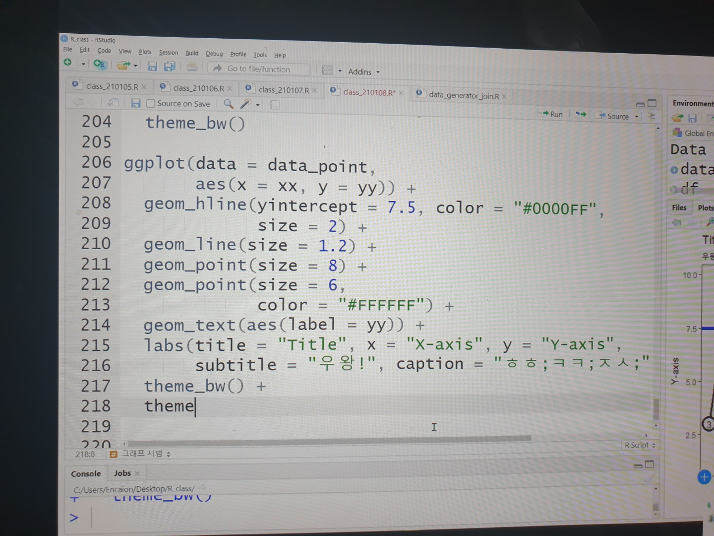

수강한 전공과목
IT공학: IT기술의 이해, 프로그래밍 입문(python), 기초프로그래밍 (C언어)
나의 활동
1. 나의 이름을 출력하는 프로그램
저의 첫 프로그래밍, 처음으로 완성한 프로그램입니다. 지금 다시 보면 부족한 부분이 있는 프로그램이지만,
스스로, 처음 만들었다는 점에서 의의가 있는 작품입니다. 파이썬 언어를 사용하였습니다.
2. 중국어 공부(hsk4급 고득점(260 이상) 달성 성공함!)
재생시간/총시간:
볼륨:
프로그래밍을 처음 배우고 받는 스트레스를 해소시켜준 중국어 공부! 그래서였는지는 모르겠지만,
즐겁게 공부했고, 생각보다 빨리 중국어 실력이 늘어감을 체감했습니다~!
꾸준히 중국어 공부해서 중국어까지 섭렵하면,, 나 진짜 능력자되겠다~!
수강한 전공과목
IT공학: C++프로그래밍, IT수학
통계학과: 기초통계학1
관심분야관련 교과 수강: 통계학입문, 경제학개론, 대용량데이터 관리와 튜닝
나의 활동
1. 지뢰게임과 벽돌깨기 게임 프로그램
각 프로그램 모두 일주일가량을 공들여 완성한 프로그램입니다.
제 친구들에게 자랑을 많이 했던,,,ㅎㅎ
프로그래밍에서의 성취감 및 재미를 저에게 알려주었다는 점에서 의의가 있는 작품입니다.
C++ 언어를 사용하였습니다.
2. 관심분야 관련 공부

여행을 좋아하는 저는,
대한민국의 구석구석 지역의 특징, 음식에 대해 공부하고 싶어
교양으로 '우리나라 음식여행' 과목을 수강하였습니다.
(생각보다 너~~무 암기라,, 생각보다도 더 힘든 과목이었던,,,,)
또, 저는 데이터를 정제하고, 처리하고 등에 관심이 많아,
'대용량데이터관리와 튜닝'이라는 과목을 수강했는데,
(수강선택에서 밀리지 않기 위해 일단 연계전공도 신청해놓음)
배운 내용을 좀더 연습해보고 싶어,
겨울방학에 혼자 R프로그래밍까지 심화적으로 맛보기 공부를 했습니다.
앞으로의 방학중에도 꾸준히 R프로그래밍을 배워볼 예정입니다.
한편, 1학년 2학기는 처음으로 "스터디"에 참여하기 시작했다는 점에서도 의미가 있는 학기입니다.
경제학개론 수업 및 주변 지인들의 추천으로 주식에 관심이 생기던 찰나, 마음 맞는 친구들끼리 모여
1학년 2학기에 한학기동안 꾸준히 주식스터디에 참여했습니다.
그리고, 겨울방학에는 웹프로그래밍 스터디에 참여해 공부하였습니다.
관련 링크는 아래에서 확인하실 수 있습니다.
주식 스터디 참여 (관련 링크)
웹프로그래밍 스터디 참여 (관련 링크)
수강한 전공과목
IT공학: 객체지향 프로그래밍 (java), 데이터 구조, 웹프로그래밍 기초 (html), IT 기기구조
통계학과: 수리통계학1, 통계수학1, 전산통계, 기초통계학2
나의 활동
1. 나만의 웹페이지, 나만의 눈사람
현페이지이지만, 어쨋든 웹프로그래밍(html)을 이용해 나만의 웹페이지를 만들었고,
객체지향프로그래밍 수업의 내용에서 graphic에 매력에 빠져,,, 눈사람을 추가적으로 만들어보았습니다.
웹페이지는 html을, 눈사람은 java 언어를 이용했습니다.
2. 전공 관련 활동
7전공,,이라는 무시무시한 학기(야망덩어리인 나)를 신청하면서 친구들이 미쳤다고 했으나,,
보란듯 열심히 잘 해쳐나갔고, 마무리했습니다.~ 이번학기는 학과 공부 외에도 바쁘게 지냈는데,
전공과목(객체+데이터구조) 스터디에 참여해 백준문제와 데이터구조 개념정리를 했고,
1학년 1학기에 처음 배웠던 파이썬 언어에 대한 이해도가 부족했던 것 같아, 이부분 보완코자,
코딩 봉사 학회에 참여해 한학기동안 파이썬 기초 부분에 대한 코딩봉사+공부를 하였습니다.
방학동안에는, 이번학기에 배운 데이터구조에 대해 스스로 복습하였고,
알고리즘 스터디에 참여하여 알고리즘 및 데이터구조 관련 백준 문제를 풀었습니다.
스터디가 끝난 이후에도 꾸준히 알고리즘 문제 풀이를 혼자서라도 할 예정입니다!
관련 링크는 아래에서 확인하실 수 있습니다.
자바와 데이터구조 스터디 참여 (관련 링크)
파이썬 기초 코딩봉사 (관련 링크)
알고리즘 (관련 링크)
3. 프로젝트
객체지향프로그래밍 학과 수업의 기말과제로 팀프로젝트를 진행했습니다.
'선택'에 어려움을 겪는 사람들을 위한 추천상품 솔루션 프로그램으로, 자바언어를 사용하였습니다.
학과에서 진행하는 IPS 대회에 참여해 '여행 웹페이지' 만드는 팀프로젝트 또한 진행했습니다.
여행메이트 구하기, 여행정보 공유 라는 2가지 큰 테마를 가진 웹페이지로,
아직 완벽히 구현이 안된 기능에 대해서는 팀원들과 이번 방학에 공부하며 보완할 예정입니다.
생각치 못하게 방학에 교내 공과대학 연합 meit 대회에 참여했습니다.
기계, 전자, it 3개의 학부의 전공을 적절히 연합하여 하나의 프로젝트를 완성했는데,
공항 컨베이너벨트에 자신의 짐의 출하/수거 유무와 위치를 알려주는 주제의 프로그램을 완성했습니다.
이번 프로젝트에서는 비록,, 다사다난한 일이 많았지만, 3등 (은상)을 수상했고,
아두이노에 대한 흥미 및 데이터베이스에 대해 공부할 수 있는 기회가 되었다고 생각합니다.
(총장상이 매우 탐나지만...ㅋㅋ 여기까지 온 것으로도 만족하는 걸!로!)
관련 링크는 아래에서 확인하실 수 있습니다.
객체지향 기말 프로젝트(관련 링크)
IPS 프로젝트 (관련 링크)
meit 프로젝트_독학공부 (관련 링크)
meit 프로젝트_with sw (관련 링크)
수강한 전공과목
IT공학: 모바일프로그래밍, 웹프로그래밍 응용, 서버운영 및 보안
통계학과: 수리통계학2, 통계수학2, 실험계획과 분산분석, 통계프로그래밍(R)
나의 활동
1. 안드로이드의 매력에 빠지다!
학과 '모바일프로그래밍' 전공 수업에서 만든 프로그램 뿐 아니라, 이번학기 청년 정책 알림 서비스,
운동/식단 관리 서비스, 공구장터 서비스를 만들면서 앱이 가진 매력을 느끼는 계기가 되었습니다.
링크, 마우스클릭으로 페이지가 이동되는 웹에서와는 달리,
앱은 음성/사람의 손의 움직임으로 동작하는 점이 앱에 관심을 가지게 된 계기가 되었습니다.
클라우드(서버)를 통해 앱을 개발하면서, 안드로이드와 클라우드에 깊은 관심을 가지게 되었고,
안드로이드의 java, kotlin 언어 공부 뿐 아니라 ios/android 크로스 플랫폼인 flutter도 공부했습니다.
정적인 데이터 기반의 서비스 개발은 어느정도의 한계가 있다는 것을 느껴서,
실시간 데이터 변동 기반의 서비스를 만들고 싶다는 생각을 가지게 되었습니다.
특별히 추천 서비스 기술을 구현하는 것에 관심을 가져 머신러닝/딥러닝 기술을 공부하며,
깊이있고 폭이 넓은 안드로이드/클라우드 전문 개발자가 되기 위해 노력하고 있습니다.
2. 전공 관련 활동
이번 학기는 GDSC Sookmyung이라는 개발동아리에 들어가 활동하기 시작했습니다.
전공을 공부하면서, 기존의 학과 전공 수업이나 스터디, 개별 공부만으로는 실력 향상에 있어
어느 정도 한계가 있다고 느껴, 개발 동아리에 지원하여 활동하게 된 계기가 되었습니다.
학과에서는 다루지 않으나, 현재 많이 쓰이거나 새로운 it언어나 기술을 함께 공부하고,
동아리원들과 함께 토이프로젝트 등을 수행하면서, 개발 실력 향상 뿐만 아니라,
함께 성장하는 즐거움과 커뮤니케이션 능력의 발전에도 큰 영향을 주었다고 생각합니다.
또, 이번 학기에는 처음으로 회사에서 개발관련 업무를 해봤다는 점에서도 의의가 있었습니다.
처음 지원할 때 생각했던 것과는 달리, 업무가 주어졌을 때 제가 가진 능력이 부족하다는 것을 느꼈으나
함께하는 팀원들과 서로 모르는 것을 공유하고 도와가면서, 결국 회사 홈페이지를 완성할 수 있었습니다.
실전 현장에서의 개발 경험은, 어떤 것에 앞으로 더 몰두하여 공부해야 할지에 대해
진지하게 고민해보는 불씨를 만들어 주었기에 갚진 시간이었다고 생각합니다.
(React 6주 스터디로 처음 배우고, 바로 React로 회사 홈페이지 구현...)
(불가능도 가능하게 만드는 인간의 의지와 노력을 다시 한번 느끼게 되었다..)
3. 프로젝트
모바일프로그래밍 학과 수업의 기말과제로 팀프로젝트를 진행했습니다
운동(만보기)과 식단을 관리하는 앱으로, 안드로이드(java)를 사용하였습니다.
교내 sw해커톤에 참여해 '청년 정책 알림 서비스' 앱을 만들었습니다.
청년관련 정책과 정책 관련 용어를 정리하여 보기 좋게 알려주는 앱으로,
해당 앱에 정적인 데이터를 사용하면서 서비스의 한계를 느껴,
실시간 데이터 기반의 앱(서비스)를 구현해 보고 싶다는 생각으로 ML공부를 시작한 계기가 되었습니다.
GDSC Sookmyung 개발 동아리에서, 6주간 React와 Android(Kotlin)을 사용한 스터디를 진행한 이후,
Android(Kotlin)을 사용하여, 공구장터 서비스를 만드는 토이 프로젝트를 진행했습니다.
처음으로, 앱/웹/백 으로 팀원을 분리하여 프로젝트를 진행했다는 점에서 의의가 있었고,
스터디 이후, 토이프로젝트를 진행하면서 스터디 내용을 체화할 수 있어서 좋았습니다.
관련 링크는 아래에서 확인하실 수 있습니다.
모바일프로그래밍 기말 프로젝트(관련 링크)
청년 정책 알림 서비스 (관련 링크)
공구장터 서비스 (관련 링크)